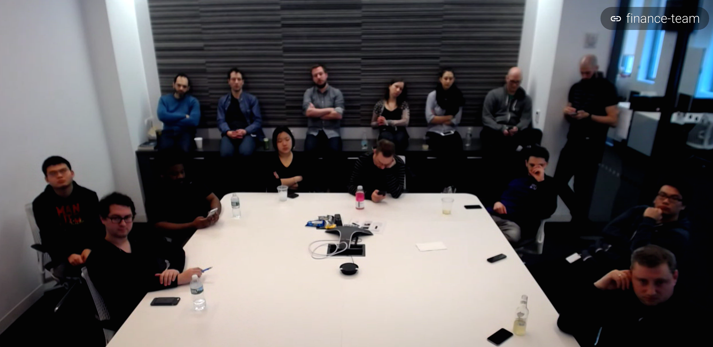

Understanding app architecture
Laying out what users are seeing today as a holistic system and figuring out ways to improve experience.

Framing the problems
Understanding who our users are and what problems we should be solving for them.


Devising solutions for each feature
We explored different UI approaches for how users would access their holdings view.

The ability to add a new lot or edit an existing lot was a new feature since we added the holdings view.

High-fidelity & Prototyping
Illustrating the approaches through visual design & rapid prototyping.


User Research & Iterating
Feature Request: Users wanted the ability to add multiple lists and holdings.
Solution: We added a holdings view and a multiple watchlist view.
Problem: Then users were not able to find the holdings view because the toggle was too small.
Solution: We changed the label to "Basic" and "Details" and made the toggle larger.
Feature Request: Users wanted to be able to see more market indicies while researching other quotes.
Solution: Our team did a hack-a-thon to introduce a market index carousel in the header.
Feature Request: We wanted users to stay engaged longer on our article pages.
Solution: We updated video to have picture-in-picture.
Exhausting all ways of user researching
Together as a team we were able to list out common themes by gathering data through surveys, beta testing, diary studies, and interviewing.

Implementation & Specs


Engineering, Design, & Product source of truth
For a project at this scale, organization and transparency is key to successful implementation.
The people behind Yahoo Finance

Sunnyvale

New York

Solving for a large usability struggle
After weeks of research, we realized the biggest struggle of all was our navigation structure.


Mobile design explorations
Coming up with different solutions for mobile was tough because of trying to fit a lot of utility in a small real estate.
Users wanted everything and we don't blame them.


Tablet design explorations
Tablet had its own set of issues, although having the larger real estate allowed us to explore split screen views.
A/B Bucket testing
Problem: In the meantime we needed to figure out a short-term solution for users to discover how to create new lists and accessing them.
Short-term solution We did multiple dropdown designs and chose the one that performed the best in parallel to the new effort.

User Research & Iterating
Problem: Since we added the ability to create multiple lists, users had a lot of trouble figuring out how to do that.
Solution: We redesigned the navigation to optimize for more than one list to encourage users to create more lists.
Feature Request: Users wanted some visual indication so they could differentiate between created, linked, and followed lists
A/B Test: We ran an a/b/c test and learned that most people liked the left two choices.

Problem: When we tested the new list and performance views, users felt that the performance tab was redundant and didn't like having to tap betwen them.
Solution: We simplified the performance information into a card instead and added total value for individual portfolios to help differentiate lists.
Problem: After moving to the list of lists, users complained about having to tap to view their watchlist now.
Solution: Because the new navigation tested well, we added an accordion so that users could open multiple lists at once and leave them open but still allowing them to tap into individual lists.
Feature Request: Users wanted the ability to compare their total performance value to overall market value.
Solution: We added an option in the overflow to enable performance chart for those who were more advanced.
Feature Request: After adding the performance chart, users wanted an additional ability to be able to select which lists get added to the total value.
Solution: We added another option in the overflow to allow users to toggle on and off which lists they wanted.
Problem: We originally tried to stay consistent with mobile but users felt the accordion was wasting space.
Solution: We did a split view that was more dense but didn't lack any of the utility that users needed.